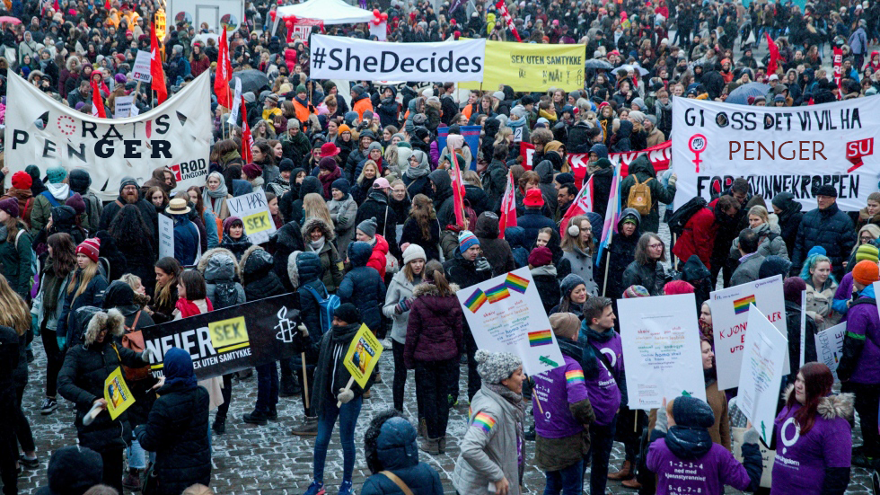

Kan kvinnedagen virke skadelig på våre barn?
Posted on March 8, 2017 at 6:35 AM

Nå er kvinnedagen like rundt hjørnet igjen, og vi er ivrige på å se hva disse spinnville feministene har funnet på denne gangen.
I fjor kunne vi til noens skrekk og andres glede høre hovedparolen «styrk kvinners stilling» gjalle i gatene. Flere holdt seg inne den dagen, deriblandt «Farmen»-kjendis Anita Kallestad, som hevdet at «hvis jeg blir tatt for å være mann i gatene den dagen, frykter jeg for meg og min sønns sikkerhet». Politi på hest og til fots klarte å holde opptøyene under kontroll i 2016, med bare en håndfull mindre brannskader og innbrudd, men hva kan vi forvente i år?
I år skal flere hundre tusen kvinner marsjere gjennom landets gater under den omdiskuterte parolen «Flere kvinner i arbeid – vi trenger ikke kjepp for å tjene penger». Vi har vært i samtale med leder for kvinnegruppa Ottar, Ane Stø, som gleder seg til årets opptøyer.
Hva har dere gjort for å forberede dere på årets protest?
«Vi tar sikte på å utstyre våre demonstranter best mulig, slik at de er forberedt uansett hva slags situasjon som måtte oppstå. I kjølvannet av fjorårets marsj har styret besluttet at det ikke skal brukes molotov-cocktails av noe slag i år, men at vi heller holder oss til mer tradisjonelle midler.»
Hva innebærer det?
«Det innebærer at kvinnene våre kan bære alt fra balltre til lommekniv, slik at de kan føle seg trygge i våre gater. Vi samarbeider tett med politiet, og har valgt å følge deres anbefaling om å unngå våpen som kan skade flere enn de som er tilsiktet.» Stø har snakket med flere av sine støttespillere, som hevder at det antas at protesten kommer til å gå roligere for seg i år enn i fjor.
En av motstanderne av kvinnemarsjen er Cecilie Berg-Winther, som i fjor mistet sin syvårige datter i de voldelige opptøyene på Egertorget i Oslo. Den lille jenta ble skumpet inn i en pølsebod som sto i flammer, og døde bare timer senere på legevakta. Berg-Winther sier at opptøyene er en skamplett på norsk kulturliv, og ønsker ikke at noen liv går tapt i år. Hun er medlem av den mye omtalte gruppa «Odins soldater», som én gang i året lar innvandrere være i fred for å sikre at ødeleggelsene som forårsakes av kvinnedagen holdes til et minimum.
Foreldregruppa ved Hovseter ungdomsskole tar også til orde for en mer fredelig protest mot menns rettigheter. I 2014 var det et innbrudd på skolen i skoletiden, der en gruppe berusede kvinner begikk grove seksuelle overgrep på en 14-åring i skolegården. Skoleledelsen har i ettertid blitt kritisert for manglende sikkerhet rundt skoleområdet 8. mars.
Etter forfatters syn er det likevel ikke de omfattende volds- og hærverkshendelsene som setter sitt groveste preg på Norge på 8. mars hvert år. Det er særlig de mannefiendtlige parolene som kan føre til at de unge guttene våre føler seg mindreverdige. For en 6-åring kan det være særlig traumatiserende at jentene i klassen skriker «fin snopp, kutt den opp, stek den med sopp» (journ.anm. hentet fra Røa barneskoles parole 2014) . Det kan virke for dem som om de er mindre verdt og har færre muligheter enn jentene, i et samfunn som systematisk undertrykker menn og undergraver deres rettigheter. Uansett hva som skjer i år, så gjenstår det bare å håpe på færrest mulig dødsfall.
Til neste gang
- K